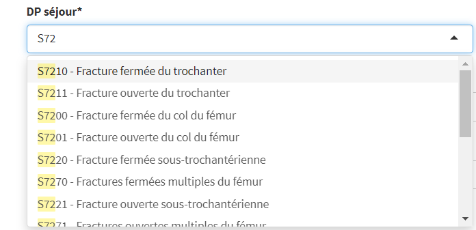
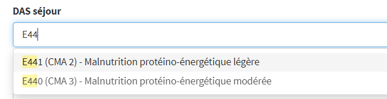
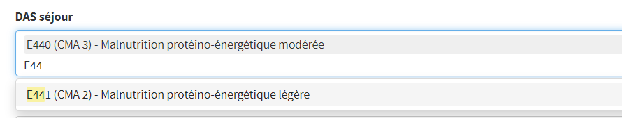
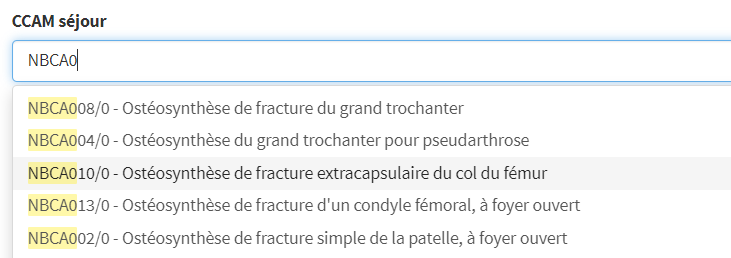
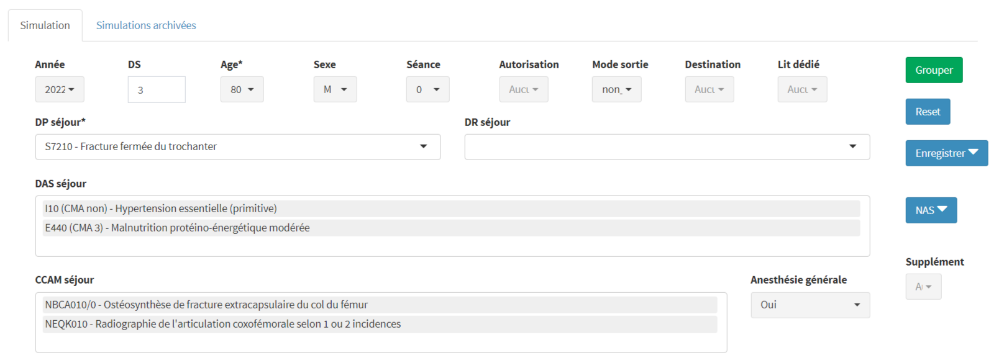
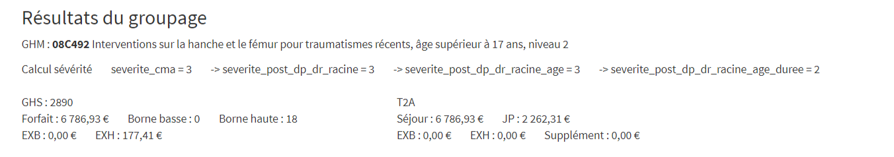
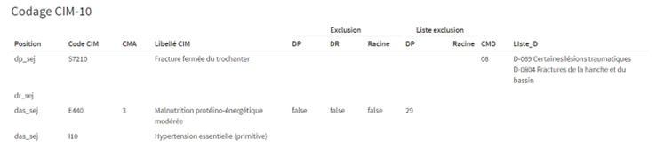
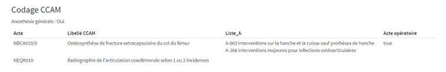
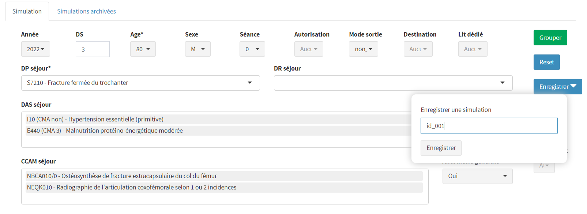
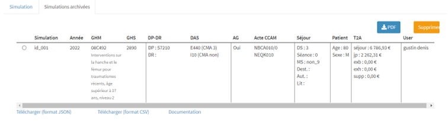

Simulateur GHM
Fonctionnalités du simulateur GHM de PMSISoft
Introduction
Sur la base de la documentation officielle (manuels des GHM, listes codes, référentiels PMSI), nous avons développé un algorithme permettant, à partir d’une grille minimale optimisée de saisie d’un séjour virtuel, d’expliciter les différentes étapes et caractéristiques de la classification en GHM et GHS et de la valorisation T2A d’un séjour MCO.
Le simulateur GHM de PMSISoft s’adresse en priorité aux professionnels du PMSI intéressés par comprendre et visualiser les étapes de la classification en GHM et la valorisation T2A de séjours MCO dans toute leurs dimensions.
Son utilisation suppose la connaissance des principaux mécanismes et règles de classifications des séjours en PMSI MCO.
Fonctionnalités
- Classification en GHM, GHS et calcul valorisation T2A à partir d’une grille minimale optimisée de saisie d’un séjour virtuel 1, 2
- Pré-remplissage optimisée des variables 3
- Assistance à la saisie des codes CIM-10 et acte CCAM
- Contrôles de saisie dans les bornes et valeurs autorisés
- Affichage en temps réel des CMA des DAS
- Affichage en temps réel du caractère opératoire des actes CCAM
- Calcul du niveau de sévérité du séjour par étapes (voir illustration ci-dessous) juqu’à la classification finale de la sévérité
- Repérage des exclusions DP, DR, racine GHM de chaque CMA
- Indication des listes en D et en A des codages CIM et actes CCAM
- Suppression des informations d’une simulation en un clic
- Rapatriement automatique des informations d’un séjour réel déjà importé via son NAS
- Archivage possible des simulations
- Export PDF d’une simulation. Exemple
- Export csv ou JSON de toutes les simulations archivées
- Choix tarif DGF ou OQN
- Annualisé à partir de l’année PMSI MCO 2022
- Hébergement en Hébergement de Santé Certifié (HDS) au MIPIH
Simulation
Grille de saisie

Grille de saisie vierge
Par défaut :
- année PMSI MCO en cours
- durée de séjour (DS) 4 = 0
- pas de séance
- autorisation UM différente de 08, 19 et 21 5
- mode de sortie différent de décès (code 9)
- destination différente de “vers une unité de MCO” (code 1)
- pas de lit dédié
- pas d’anesthésie générale
Pour revenir à la grille de saisie, on clique sur le bouton Reset

Saisie DP et DR
A partir d’une position, tous les codes CIM-10 correspondant sont proposés.
Seuls les codes CIM-10 autorisés en DP ou DR sont proposés dans chacun des filtres DP et DR.


Saisie DAS
Seuls les codes CIM-10 autorisés en DAS sont proposés.
Quand un DAS est une CMA, le niveau de CMA est indiqué.
Quand un DAS a été sélectionné, il n’est plus proposé.

Saisie CCAM
Proposition des actes CCAM à partir de la saisie des premières positions.
Les actes CCAM opératoires sont identifiés par le suffixe “/0”
Quand un acte CCAM a été sélectionné, il n’est plus proposé.

Bouton “Grouper”
Quand la grille est saisie, on clique sur le bouton “Grouper” situé en haut à droite
Le bouton “Grouper” ne devient cliquable et actif que si les 3 variables minimales (DS, DP séjour et âge) ont une saisie valide.
Ici la grille du séjour virtuel à classer est :
- âge = 80 ans
- DS = 3
- DP = S7200
- DAS = (E440, I10)
- CCAM = (NBCA010/0, NEQK010/0)
- anesthésie générale = “Oui” 6
Résultats de simulation
Les résultats d’une simulation se présentent en 4 parties :
- les résutats de groupage
- le rappel du codage adminsitratif
- un tableau du codage CIM-10
- un tableau du codage CCAM
Résultats du groupage

GHM
Code et libellé
Calcul sévérité
Calcul après classification dans une racine de GHM éligible aux niveaux de sévérité et avec une DS autorisant une classification en niveau de sévérité.
4 étapes successives calculées jusqu’à l’identification de la sévérité du GHM :
severite_cma = sévérité issue du codage des DAS CMA (= la sévérité maximale rencontrée)
severite_post_dp_dr_racine = pour chaque CMA, exclusion par DP, DR ou racine de GHM. On retient la sévérité maximale non exclue
severite_post_dp_dr_racine_age = prise en compte de l’effet âge s’il y a lieu, fonction de la racine GHM
severite_post_dp_dr_racine_age_duree = prise en compte de la durée de séjour. C’est la sévérité finale.
Dans notre exemple, c’est cette étape qui fait passer la sévérité de 3 à 2 (car DS = 3)
GHS
Code et informations liées (valeur forfait, borne basse, borne haut, exb et exh)
Tient compte du paramétrage DGF ou OQN
T2A
Valorisation T2A du séjour virtuel
Valorisation T2a par JP 7
Part de la valorisation EXB
Part de la Valorisation EXH
Codage CIM-10

Codage CIM-10
Dans un tableau, tous les codages CIM-10.
Pour les DP et DR, indication du ou des CMD vers laquelle (lesquelles) oriente le DP et le DR et les listes en D associées
Pour chaque DAS CMA, indication, via des variables logiques, de son exclusion par le DR, le DR ou la racine GHM + indication numéro des listes exclusions associées à la CMA
Codage CCAM

Codage CCAM
Dans un tableau, tous les actes CCAM.
Pour chaque acte opératoire, indication des listes en A associées
Codage administratif
Codage administratif
Rappel des codages administratifs de la grille de saisie du séjour virtuel.
Archivage

On a cliqué sur le bouton “Enregistrement” : une pop-up est apparue demandant la saisie d’un code ou d’un initulé pour archiver la simuation.
Ici on saisie le code “id_001”
Règle : si une simulation archivée a déjà ce code, elle sera remplacée par la nouvelle simulation archivée.

Ecran “Simulations archivées”
Liste des simulations archivées avec le rappel de ses principales informations.
Règle : une simulation archivée est rattachée à l’utilisateur qui l’a créée.
Accès
Le simulateur GHM PMSISoft est accessible dans l’accès Professionnel MCO.
Il peut être proposé en accès dédié pour des établissements ou des sociétés intéressés uniquement par le simulateur GHM de PMSISoft.
Pour plus d’informations ou une démonstration, nous contacter (en sélectionnant l’objet “Simulateur GHM de PMSISoft”)
Notes de bas de page
la grille minimale pour classer est composée de 3 variables : durée de séjour (0 jour PMSI par défaut), l’âge et un DP séjour↩︎
CMD non disponibles : CMD 14 et CMD 15↩︎
exemple variable “Mode de décès” = “non_9” (non décès)↩︎
durée au sens PMSI = date sortie - date entrée↩︎
08 = “Soins et accompagnement des malades en phase terminale (unité de soins palliatifs)”, 19 = “Unité d’addictologie de recours et de référence” et 21 = “Hémodialyse en centre pour adulte”↩︎
traduction codage PMSI = au moins 1 acte CCAM avec activité 4↩︎
valorisation T2A / nombre de JP si DS > 0 et valorisation T2A si DS = 0↩︎